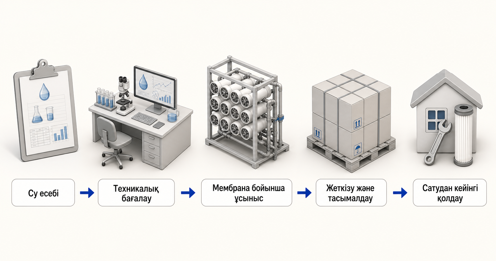

Кері осмос (RO)
RO кең еріген тұзды қалпына келтіру немесе жоғарырақ таза өнім суы қажет болғанда қарастырылады. Азық химиясы, қысым, алдын ала өңдеу және концентрат жағдайлары практикалық шекараны анықтайды.
Yuchen Water — Vontron мембраналық дистрибьютор және дилер. Біз тұрғын үй, коммерциялық және өнеркәсіптік жобалар үшін мембраналық материалдарды жеткіземіз және тиісті жабдықты техникалық қолдауды қамтамасыз етеміз. Бұл орталық сатып алушылардан өнім үлгісін таңдауды сұрамай, мембраналар санаттары мен қолданбаларын түсіндіреді. Ағымдағы су немесе технологиялық сұйықтық есебі, тазарту мақсаты және жұмыс туралы қысқаша ақпарат бірінші орында.

Мембраналық категориялар бөлу рөлдерін сипаттайды. Олар су туралы есептің немесе соңғы материалды ұсынымның орнын толтыра алмайды.
RO кең еріген тұзды қалпына келтіру немесе жоғарырақ таза өнім суы қажет болғанда қарастырылады. Азық химиясы, қысым, алдын ала өңдеу және концентрат жағдайлары практикалық шекараны анықтайды.
NF селективті еріген түрлерді және органикалық бөлуді қолдай алады. Ұсталған және өткізгіш нысандар, рН, температура және тазалау шарттары көрсетілуі керек.
UF және MBR рөлдері әдетте тоқтатылған, коллоидтық және биологиялық материалға бағытталған. Олар мембрананың қатаң кезеңдері алдында соңғы тосқауылдар немесе алдын ала өңдеу болуы мүмкін.
Теңіз суы мен тұщы суды қолдану материалды таңдау алдында тұздылықты, ионды, температураны, қабылдауды, алдын ала өңдеуді және жоғары қысымды жабдықты тексеруді қажет етеді.
Дереккөзден және мақсатты пайдаланудан бастаңыз. Әрбір жол үлгіні автоматты таңдауға емес, есепті тексеру тізіміне және техникалық талқылауға әкеледі.
Тұздылықты, иондарды, температураны, қабылдаудың өзгергіштігін, биологиялық тәуекелді, мақсатты өткізгіштік пен концентрат шектеулерін қарастырыңыз.
Қаттылықты, сілтілілікті, кремний диоксидін, темірді, марганецті, газдарды, тұздылықты және жергілікті ластаушы заттарды тексеріңіз.
Дезинфекциялау құралдарын, органикалық заттарды, қаттылықты, дәмдік мақсаттарды, талап етілетін өнімді және төменгі ағынды пайдалануды растаңыз.
Генерациялау процесін, өзгергіштігін, органикалық заттарды, майларды, металдарды, қатты заттарды, қайта пайдалануды және концентраттарды өңдеуді сипаттаңыз.
Толық иондық тепе-теңдікті, кішігірім масштабтағы тәуекелдерді, органикалықтарды, өзгермелілікті және мембраналық қадамның жоспарланған рөлін қамтамасыз етіңіз.
Толық құрамды және бөлу мақсатын көрсетіңіз. Мембраналық материалды қолдау толық экстракция процесі немесе қалпына келтіру нәтижесі туралы уәде емес.
Ұсталған компоненттерді, өнім сапасының мақсаттарын, санитарияны, рН, температураны, тазалауды және дәлелдеу талаптарын анықтаңыз.
Сыйымдылық белгісінен гөрі кіріс суын, сұранысты, қысымды, тазартқыш құрылымын, алдын ала өңдеу және ауыстыру рұқсатын сәйкестендіріңіз.
Веб-сайт мазмұны санат деңгейіндегі техникалық білім береді. Қорытынды материал, жабдық немесе өнімділік туралы шешім қабылданар алдында толық есеп пен расталған операциялық нұсқау қажет. Yuchen Water Vontron мембраналарды өндіруді талап етпейді және қаралмаған ағын үшін флюс, қалпына келтіру, қызмет ету мерзімі, таңдау қабілеті немесе жоба нәтижелері туралы уәде бермейді.
RO, NF және UF мембраналар санаттары арасында қоректік судың химиясы, тазарту мақсаттары және жұмыс жағдайлары таңдауды қалай бағыттайтынын біліңіз.
Нұсқаулықты оқыңыз →Теңіз суы немесе тұщы су мембранасы туралы ұсыныс алдында келетін есеп деректерін, алдын ала өңдеу және жабдық сұрақтарын түсініңіз.
Нұсқаулықты оқыңыз →Минералды заттардың, металдардың, газдардың, органикалық заттардың және пайдалану мақсаттарының толық талдауынан жер асты сулары мен ұңғыма суларының мембранасын тазартуды жоспарлаңыз.
Нұсқаулықты оқыңыз →Ағынды сулардың тарихы, қайта пайдалану мақсаттары және алдын ала тазарту тәуекелдері UF, NF және RO өнеркәсіптік қайта пайдалану жобасындағы рөлдерін қалай анықтайтынын қараңыз.
Нұсқаулықты оқыңыз →Тұздылығы жоғары ағынды суларға арналған мембраналық материалдарды немесе ZLD қатысты қолдауды талқылау алдында қажетті химияны, өзгермелілікті және процестің мақсатты ақпаратын дайындаңыз.
Нұсқаулықты оқыңыз →NF, RO немесе UF тұзды көлдің тұзды ерітіндісі мен литийге қатысты сұйықтықтарға арналған мембраналық материалдарды талқыламас бұрын қандай құрам мен технологиялық мақсатты деректер қажет екенін біліңіз.
Нұсқаулықты оқыңыз →Тұрмыстық және жеңіл коммерциялық RO мембраналық материалдарды үлгі белгісінен гөрі су сапасы, күнделікті сұраныс, жабдықтың үйлесімділігі және қызмет көрсету жағдайлары бойынша таңдаңыз.
Нұсқаулықты оқыңыз →Белсендірілген көмір RO дейін тотықтырғышты және органикалық бақылауды қалай қолдайтынын және көміртекті таңдау неге әлі де су талдауына және жүйе жағдайларына байланысты екенін түсініңіз.
Нұсқаулықты оқыңыз →Белсендірілген көмір RO дейін тотықтырғышты және органикалық бақылауды қалай қолдайтынын және көміртекті таңдау неге әлі де су талдауына және жүйе жағдайларына байланысты екенін түсініңіз.
Нұсқаулықты оқыңыз →Ресми сілтеме ағымдағы мембраналық санаттар мен құжаттар үшін негізгі анықтама ретінде берілген. Өнім туралы ақпарат өзгеруі мүмкін, сондықтан нақты материал мен ағымдағы ресми құжат техникалық тексеру кезінде расталады. Vontron official industrial membrane overview · Vontron official UF membrane overview
Өйткені дереккөз атаулары мен TDS барлық масштабтау, ластану, үйлесімділік және емдеу мақсатты тәуекелдерін сипаттамайды.
Жоқ. Бұл сатып алушыларға дұрыс ақпаратты дайындауға көмектеседі; қорытынды ұсыныс есеп пен жұмыс жағдайын шолудан кейін жасалады.
Иә. Негізгі жабдықтау - бұл алдын ала өңдеу, корпустар, сорғылар, сүзу, басқару элементтері, іске қосу нұсқаулары және ауыстыруды жоспарлау үшін тиісті қолдауы бар мембраналық материалдар.